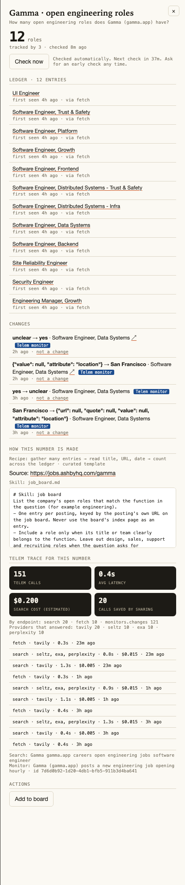

Left is the panel today (scroll it). Middle is the proposal, with working tabs. Same content, nothing removed; it is regrouped so the first screen answers “what is the number and why should I believe it”.
Today

Proposed
Ledger of 12 postings, each stored once by its link. All first seen 4h ago, read from jobs.ashbyhq.com/gamma.
Only what moved the number is listed first. Smaller edits to an entry are folded away.
# Skill: job board List the company's open roles that match the function in the question. - One entry per posting, keyed by the posting's own URL. - Leave out design, sales, support and recruiting roles. - Leave out closed or archived postings.
Providers that answered: tavily 20 · seltz 10 · exa 10 · perplexity 10
| fetch | tavily | 0.3s | 23m ago |
| search | seltz, exa, perplexity | 0.8s · $0.015 | 23m ago |
| search | tavily | 1.3s · $0.005 | 23m ago |
| fetch | tavily | 0.3s | 1h ago |
| search | seltz, exa, perplexity | 0.9s · $0.015 | 1h ago |
What changes
{"value": null, "attribute": "location"}. Changes that moved the number come first; small edits to an entry are folded.Two bugs seen while reviewing today's panel: a signed-out visitor sees “Add to board” on cards that are on the board, and the new paced monitors are labelled “hourly”.